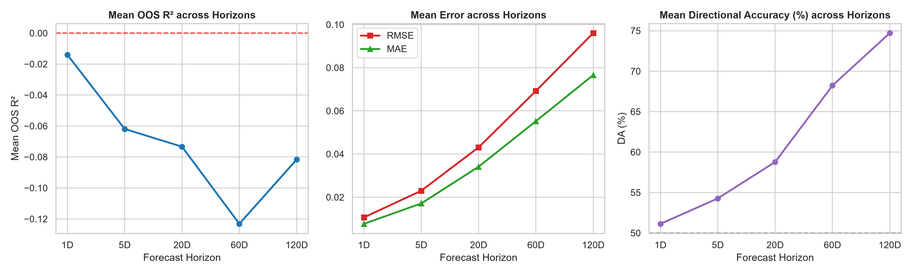

Statistical Significance Summary
Research Project: When Does Equity Return Predictability Decay? A Multi-Horizon and Regime-Dependent Out-of-Sample Analysis
Primary Dataset: S&P 500 (^GSPC) Daily Returns (1990–2026) | VIX Volatility Conditioning
Core Inquiry: Determining the structural form and economic decay of equity return predictability across forecast horizons and volatility regimes.
| Model | OOS_R2 | DA | RMSE |
|---|---|---|---|
| XGBoost | 0.0059 | 0.66388 | 0.04646 |
| Ridge | 0.00182 | 0.63538 | 0.04678 |
| Elastic_Net | 0.00148 | 0.65904 | 0.0465 |
| LSTM | -0.00794 | 0.64332 | 0.04686 |
| Random_Forest | -0.01202 | 0.6505 | 0.04712 |
ARIMAX, Ridge, Elastic_Net, SVR, Random_Forest, XGBoost, LightGBM, PatchTSTRidge, Elastic_Net, SVR, XGBoost, LightGBM, TCN, N-HiTS, PatchTSTRidge, SVR, XGBoost, LightGBM, RNN, LSTM, TCN, iTransformerARIMAX, Ridge, SVR, Random_Forest, XGBoost, LightGBM, TCNARIMA, SARIMA, N-BEATS, N-HiTSSummary metrics averaged across all regression models from 1-day to 120-day horizons:
| Horizon | OOS_R2 | RMSE | MAE | DA | Excess_DA |
|---|---|---|---|---|---|
| 1D | -0.0139737 | 0.0106316 | 0.00765789 | 0.511321 | -0.0261263 |
| 5D | -0.0619368 | 0.0229789 | 0.0171 | 0.542737 | -0.0512526 |
| 20D | -0.0733632 | 0.0430947 | 0.0341158 | 0.587758 | -0.0811158 |
| 60D | -0.123184 | 0.0692263 | 0.0552211 | 0.682279 | -0.0673579 |
| 120D | -0.0816368 | 0.0960579 | 0.0766158 | 0.747121 | -0.0333368 |

Empirical evidence across Low, Normal, and High volatility regimes:
| Regime | OOS_R2 | RMSE | MAE | DA |
|---|---|---|---|---|
| Low | -0.126684 | 0.0370526 | 0.0302737 | 0.611121 |
| Normal | -0.0760053 | 0.0423 | 0.0339316 | 0.652968 |
| High | -0.0599263 | 0.0617316 | 0.0500579 | 0.562826 |
Summary of hypothesis tests conducted against the Historical Mean benchmark (DM Test) and random coin toss (Sign Test):
| Horizon | Significant_DM_Tests | Non_Significant_DM_Tests | Significant_Sign_Tests | Non_Significant_Sign_Tests | Total_Models_Tested |
|---|---|---|---|---|---|
| 1D | 0 | 19 | 8 | 11 | 19 |
| 5D | 0 | 19 | 12 | 7 | 19 |
| 20D | 0 | 19 | 15 | 4 | 19 |
| 60D | 0 | 19 | 17 | 2 | 19 |
| 120D | 0 | 19 | 19 | 0 | 19 |
Classification performance of Logistic Regression on the independent hold-out test set:
| Model | Horizon | ROC_AUC | Accuracy | Balanced_Accuracy | Precision | Recall | F1 | DA | Sign_pvalue |
|---|---|---|---|---|---|---|---|---|---|
| Logistic_Regression | 120D | 0.5756 | 0.7805 | 0.5 | 0.7805 | 1 | 0.8767 | 0.7805 | 0 |
| Logistic_Regression | 1D | 0.4974 | 0.489 | 0.492 | 0.5288 | 0.4522 | 0.4875 | 0.489 | 0.7995 |
| Logistic_Regression | 20D | 0.5212 | 0.6689 | 0.5 | 0.6689 | 1 | 0.8016 | 0.6689 | 0 |
| Logistic_Regression | 5D | 0.5226 | 0.5117 | 0.5135 | 0.6071 | 0.5043 | 0.551 | 0.5117 | 0.2005 |
| Logistic_Regression | 60D | 0.6264 | 0.746 | 0.4976 | 0.7487 | 0.9951 | 0.8545 | 0.746 | 0 |